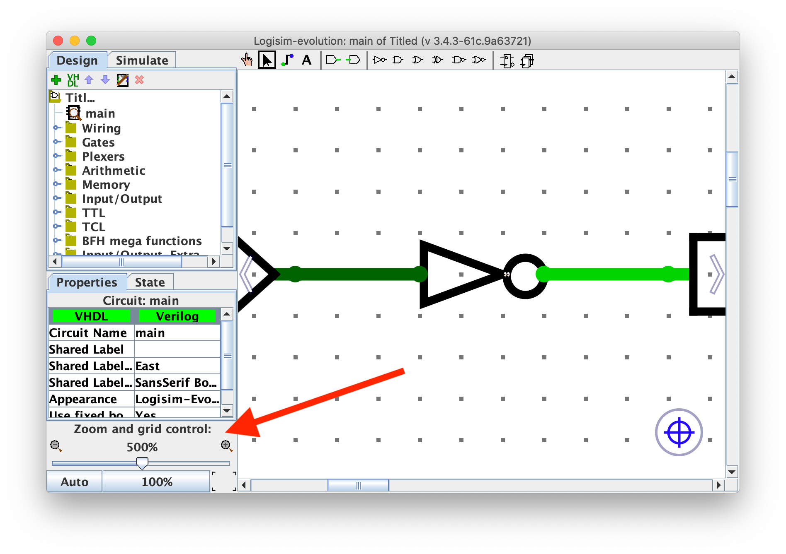
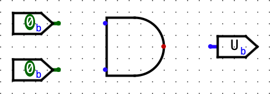

Lab 5: Logisim 实验¶
本实验介绍了 Logisim —— 一种用于设计和仿真数字逻辑电路的教育工具。它是 Project 3 的重要准备内容。
配置¶
你必须在本地机器上完成本实验。如果需要重新设置你的本地机器，请查看 Lab 0。
在本地机器的 labs 目录中，拉取你可能在之前实验中所做的更改：
git pull origin main仍然在 labs 目录下，拉取本实验的文件：
git pull starter main如果你遇到任何 git 错误，请查看常见错误页面。
在 labs 目录中，运行以下命令来下载最新版本的 Logisim：
bash tools/download_tools.sh本实验中的所有操作都将在 Logisim Evolution 中完成。
开始之前的一些重要提醒：
- Logisim 是一个 GUI 程序，因此无法在无界面环境中（如 WSL、SSH 等）轻松使用。请在具有 GUI 的本地环境中运行（需 Java 9+ 和 Python 3.6+）。macOS 或 Linux 系统通常已准备就绪。如果你使用的是 Windows，请使用支持 GUI 的
Git Bash。 - 请使用我们分发的 Logisim 版本，它与网上其他版本不同（包含修复和课程专用内容）。
- 不要移动由助教提供的输入/输出引脚；如果引脚位置发生改变，你的电路将无法正确测试。如果你的电路未通过测试但你认为它是正确的，请检查你的电路是否适配
tests/ex#_test.circ中的测试框架。 - Logisim 不会自动保存工作内容。在操作过程中请记得经常保存（并提交）你的工作！
可能的安装错误¶
在 Windows 10 上运行 Python 时遇到 “Permission Denied” 错误：
- 在 Windows 搜索栏中搜索“app execution alias”，点击“管理应用执行别名”
- 禁用 Python 的商店版本。
截图

java.lang.UnsupportedClassVersionError：
Exception in thread "main" java.lang.UnsupportedClassVersionError: com/cburch/logisim/Main has been compiled by a more recent version of the Java Runtime (class file version 60.0), this version of the Java Runtime only recognizes class file versions up to 52.0你需要将 Java 更新至 16+。请按照 Lab 0 的设置说明 进行设置。
Exercise 1: 简介¶
和 Venus 类似，你可以在 lab05 文件夹中运行如下命令来打开 Logisim：
java -jar ../tools/logisim-evolution.jar # 若处于其他目录，请使用对应的相对路径稍等片刻后，应出现一个略显古老的窗口。如果没有，请检查终端中是否有报错信息。
我们将从创建一个非常简单的电路开始，以熟悉如何放置门电路和连线。在开始之前，注意一个 非常有用的功能：缩放功能！ 它位于左下角，在接下来的几周中将极大提高你的效率。缩放 缩放 缩放~

创建电路¶
-
 先点击
先点击 AND门按钮。这样会让一个AND门的阴影跟随你的光标。然后在主图窗口内点击一次，放置一个AND门。 -
点击
Input Pin按钮。现在，在你的AND门左侧放置两个输入引脚。 -
 点击
点击 Output Pin按钮。然后在AND门右侧放置一个输出引脚。此时你的电路图应类似于下图：  -
 点击
点击 Select tool按钮。点击并拖动连接两个输入引脚到AND门左边的两个输入端。你只能画垂直或水平线。先画水平线，松开鼠标，再从该线末端点击并拖动画垂直线。重复此方法连接AND门右侧输出到输出引脚。完成后电路应类似于：
-
 最后，
最后，Poke工具可以点击引脚切换其值。如果点击连线，会显示该线的值。选中Poke工具，点击输入引脚，观察输出是否符合AND门逻辑。试着点击线，看当前线上的值。这在后续构建复杂电路时非常有用。 -
现在删除连线，尝试将每个输入引脚接到
AND门的 另一个 引脚上，让连线交叉。示例如下：
如果你画线时，拖动 经过 另一条线但不停，线不会连接。如果拖动停止在另一条线上，会创建一个节点（大圆），两线连接。设计电路时注意这些节点。
导线颜色与数值对照表¶
请查看下面列表，尝试自己画出各种颜色的线。

| 颜色 | 含义 |
|---|---|
| 深绿色 | 1 位线的值是 0 |
| 亮绿色 | 1 位线的值是 1 |
| 黑色 | 多位线（许多组件的位宽可以在左下角属性中配置） |
红色（值显示 EEEE） |
线上有多个值（比如输入的 0 和 1），注意节点处有大圆圈 |
蓝色（值显示 UUUU） |
线处于悬空状态（无确定值） |
| 橙色 | 线连接了位宽不同的组件，例如 1 位输入接 2 位输出 |
练习2： 子电路¶
就像 C 语言中可以有辅助函数，电路图也可以包含子电路。本部分将创建几个子电路来演示它们的用法。
注意：Logisim Evolution 通常不允许带空格或符号的名字，或以数字开头，或与关键词冲突（如
NAND）。
-
打开练习 2 电路图（
File -> Open -> lab05/ex2.circ）。 -
双击左侧电路选择器中的
AND2，打开示例子电路。 注意名字结尾的
注意名字结尾的 2，因为已有组件名为AND，所以不能直接命名为AND。示例电路有两个 1 位 输入引脚A和B，结果A & B输出到RESULT引脚。看起来和你之前做的电路很像。 -
打开
NAND2子电路，开始制作自己的电路！请 不要 使用 Gates 库中的内置NAND门（只用AND、OR和NOT门，位于工具栏上方或左侧库里）。完成后，同理完成NOR2、XOR2、MUX2（2:1 多路选择器）和MUX4（4:1 多路选择器）。注意NAND、NOR、XOR和MUX已内置于 Logisim，本练习目的是帮助你理解子电路的使用。- 请不要更改子电路名字或新建子电路，否则可能无法正常工作。
- 除了
AND、OR、NOT外，不要使用其他内置门。完成一个子电路后，你可以用它构建其它子电路。方法是单击电路选择器中的子电路，像使用门一样放置。 - 编写真值表会帮助你完成电路，也可以复习相关课程幻灯片。
- 你可以参考这份组合逻辑块讲义实现 MUX。
- 对于
4-to-1 MUX，SEL0和SEL1分别对应 2 位选择器的第 0 和第 1 位，不要弄反！
测试¶
打开终端并进入 lab05 文件夹。我们为每个练习提供了测试，你可以使用 python3 test.py 来运行这些测试。对于每个测试，你的电路会在一个测试框架电路中运行（例如：tests/ex2-test.circ），并将其输出与该测试的参考输出（tests/out/ex2-test.ref）进行比较。在输出文件中，每一列对应主电路的一个输入或输出引脚，每一行表示一组输入以及电路产生的相应输出。如果你的电路输出（tests/out/ex2-test.out）不同，你可以将其与参考输出文件进行比对；diff 命令可能会有所帮助。
-
请注意，输出文件是通过在每个数值之间添加制表符（
\t）进行“格式化”的，显示为每个制表符宽度为 8 个空格时效果最佳。数值或列标题如果超过 8 个字符，可能会导致对齐错位，所以要注意这些情况！ -
不要修改参考输出文件，否则本地测试可能会产生错误的结果。
-
本次实验你不需要修改测试框架电路（test harness circuits）。不过，查看一下这些电路可能会有帮助；我们在下一个实验和项目 3 中会做类似的事情！
检查点¶
此时，请确保你已经熟悉 Logisim 环境，能够创建子电路，并能在其他电路中复用这些子电路。
练习3：存储状态¶
练习3：存储状态
让我们实现一个电路，用来重复递增一个数值。这个电路和你之前为实验构建的电路不同之处在于，它会将该数值作为状态存储在寄存器中。
-
打开练习3的电路图（
File -> Open -> lab05/ex3.circ），进入空的AddMachine电路。- 记得经常保存，避免移动或修改提供的输入/输出引脚。
-
从算术库中选择
Adder子电路（左侧的电路选择器），并将加法器放入你的AddMachine子电路中。
-
从存储库中选择
Register寄存器，并放入一个寄存器到你的子电路中。 下面的图片展示了寄存器的组成部分。
-
将
clk输入引脚接到寄存器的时钟引脚上。通常，让电路中的所有组件使用相同的时钟比较好，这样可以保证同步。在这里，测试夹具为其寄存器使用了一个时钟，因此它通过clk引脚为你电路中的寄存器传入了该时钟信号。将来如果你设计的电路没有现成的时钟信号，可以用Wiring库中的新Clocking组件自己创建。 -
将加法器的输出连接到寄存器的输入，将寄存器的输出连接到加法器的输入。
- 连接组件时你可能会遇到
Incompatible widths（宽度不兼容）错误。这意味着你的线尝试连接两个不同位宽的引脚。如果用选择工具（工具栏上的鼠标指针图标）点击组件，会在窗口左下角看到Data Bits属性，这个值决定了组件输入和输出的位宽。确保加法器和寄存器的位宽都设置为8，这样Incompatible widths错误就会消失。
- 连接组件时你可能会遇到
-
用一个值为
1的8位常量连接到加法器的第二个输入。你可以在Wiring库中找到Constant电路元件。将它的值改为1，只需在Value属性中输入1并按回车。你应该会看到值变成了0x1（Logisim 会自动将你输入的十进制数转换为十六进制）。 -
连接两个输出引脚到你的电路，这样你可以监视加法器和寄存器的输出。加法器的输出应该连接到
ADD_OUT，寄存器的输出连接到REG_OUT。最终你的电路应类似于下图：
-
现在打开本练习的测试电路（
lab05/tests/ex3-test.circ）。在左上角，有一个小电路（类似你的AddMachine），用于跟踪当前周期。下面你会看到你的AddMachine电路已连接到时钟和一些输出引脚。 -
通过
Simulate -> Tick Half Cycle（命令/控制 + T）执行一次时钟周期。你会看到AddMachine的输出增加了！同时，时钟指示灯变成亮绿色。 这对于项目3非常重要，请确保你知道如何点击时钟周期和操控线网。 如果再执行一次
如果再执行一次 Tick Half Cycle，你会看到时钟变回暗绿色，但数字不变。这是因为寄存器默认是上升沿触发（即从低电平变为高电平时触发）。 如果你不想看半个周期的变化，也可以用Simulate -> Tick Full Cycle（F2）。
-
手动点击时钟周期会很累，好消息是：Logisim 可以帮你自动点击！开启
Simulate -> Ticks Enabled/Enable Clock Ticks（Command/Control+K）。你的电路就会自动计数了！
如果想让电路跑得更快，可以在Simulate -> Tick Frequency调整频率。要停止，重新点击Ticks Enabled/Enable Clock Ticks（Command/Control+K）。想重置电路，点击Simulate -> Reset Simulation（Command/Control+R）。 -
完成后，尝试运行提供的测试（用
python3 test.py）。
检查点¶
此时，请确保你能够熟练设计和仿真使用组合逻辑与状态元件（寄存器）混合的简单数字逻辑电路，且能在 Logisim 环境中操作。
高级 Logisim 功能¶
这里介绍三个 Logisim 功能，它们不仅能帮你节省大量时间，还能让你的电路看起来更整洁。
分割器（Splitters）¶
分割器允许你将一个多位值拆分成更小的部分，或者（虽然名字是分割器）将一个或多个位的多个值合并成一个单一的值。
例如，这里我们将4位二进制数 1100 分成 11 和 00，交换它们的位置，再加上一个 0，组合成最终的5位数 00110：
点击分割器（用Select工具）可在侧边栏（左下角）看到其属性。你可以配置分割器的臂数以及每个臂上的位数。上图中左右分割器的属性如下：

注意有一个属性叫 Facing，可以用它旋转分割器。在上面的例子中，右边的分割器朝西（West），左边的朝东（East）。
如果你看到橙色的错误线，这说明输入和输出的位宽不匹配。确保连接两组件的线时，正确设置了该组件的位宽。

隧道（Tunnels）¶
隧道允许你画一条“隐形线”将两个点连接起来。隧道通过区分大小写的标签分组，用于连接线，如下图：

它的实际效果是：

连接线时要注意哪些线通过隧道连到其他线，例如这个情况：
它的实际效果是：

强烈推荐你用隧道，因为它们让你的电路看起来更清爽（线更少更整洁），调试起来也更方便。
扩展器（Extenders）¶
改变线的位宽时，使用位扩展器能让电路更清晰。
例如，下面是将一个8位线零扩展到16位的实现：

和分割器相比，扩展器一眼看上去更直观，尤其在复杂电路中更有帮助。
另外，扩展器也能执行丢弃位的操作，虽然名字叫扩展器：

虽然分割器更简洁，但读起来稍微难一点。
练习4：右旋（Rotate Right）¶
利用你对分割器和多路复用器的知识，你准备实现一个不简单的组合逻辑模块：RotRight，即“右旋”。RotRight 将输入 INPUT0 的位模式向右旋转 AMOUNT 位。
举例来说，如果 INPUT0 是 0b1000000000000101，AMOUNT 是 0b0011（十进制3），输出应为 0b1011000000000000。注意最右边的3位从右端旋出后回到左端。这个操作用位运算表示是 R = A >> B | A << (16 - B)。
实现一个名为 RotRight 的子电路，输入如下：
- INPUT0（16位），需要旋转的16位输入
- AMOUNT（4位），旋转位数（为什么是4位？）
你可以在 ex4.circ 找到起始子电路。记得常保存，避免移动或修改提供的输入/输出引脚。
输出应是 INPUT0 按 AMOUNT 指定的位数右旋后的结果。禁止使用 Logisim 自带的移位器，但可以使用所有其他组合逻辑（多路复用器、常量、门等）。Logisim 内置的多路复用器（Plexers 菜单下）可能特别有用。你的实现不应包含时钟或时钟元件（如寄存器）。
- 我们给出了
rot1、rot2、rot4、rot8的骨架，这些分别实现右旋1、2、4、8位。你应实现这些子电路，并在RotRight实现中使用它们。
提示
您可以使用提供的子电路对 0-15 之间的任意数字进行循环移位。例如，要循环移位 9，您可以先循环移位 8，然后再循环移位 1。
完成后，尝试运行提供的测试。